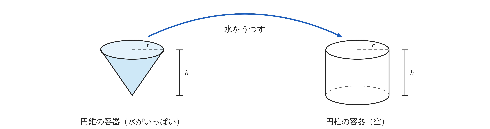
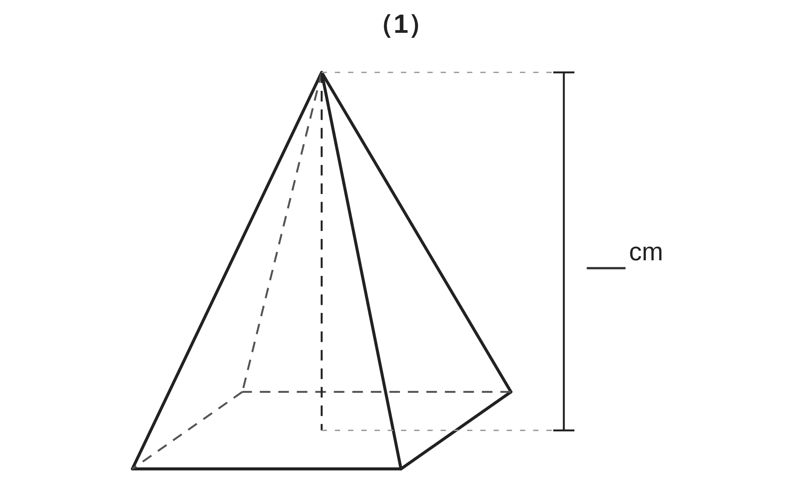
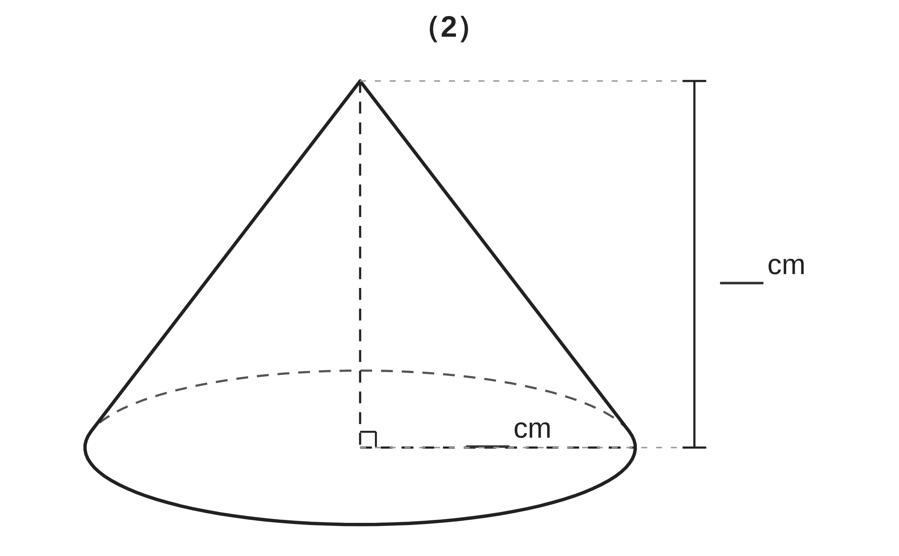
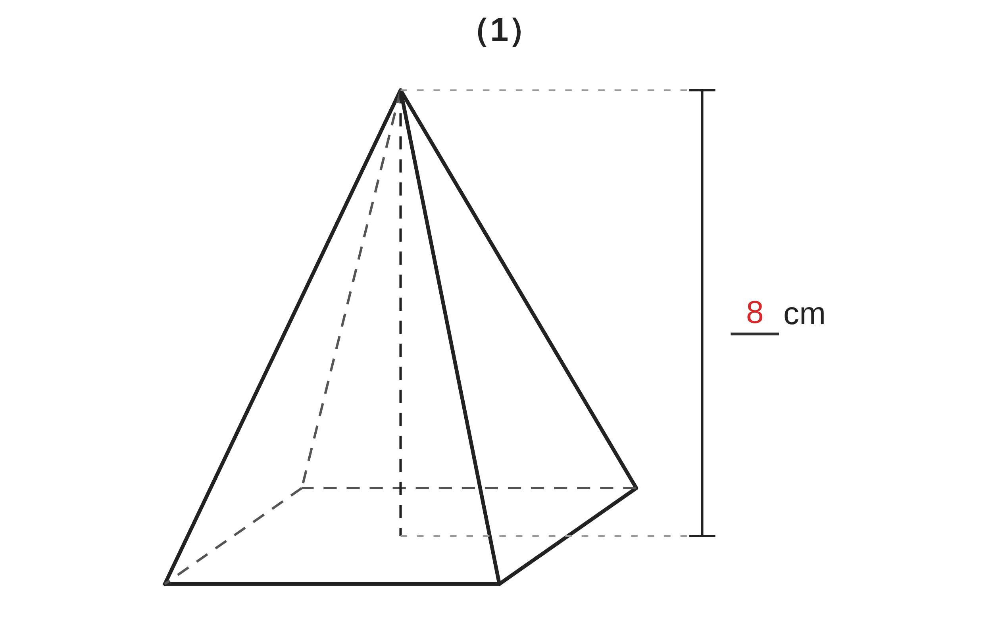
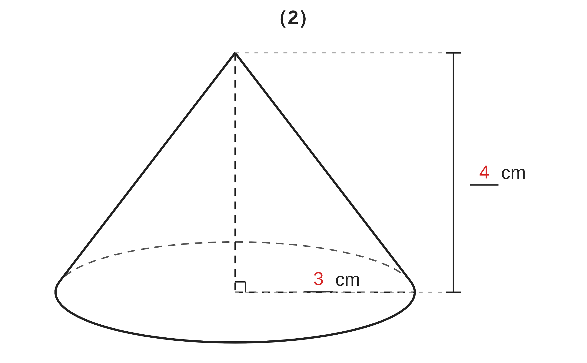
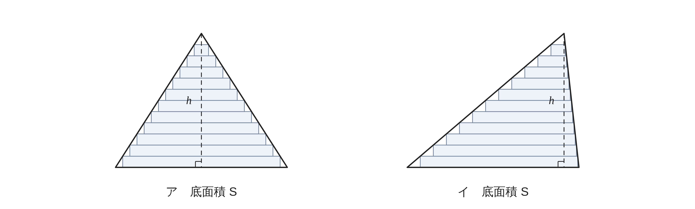

ペア学習
第11時 角錐や円錐の体積は、角柱や円柱の何分のいくつか、実験で確かめよう
第10時の重要語句を、1人1問ずつ出題し合う。
言葉の意味を、自分の言葉で言おう。
錐体
側面積
底面積
母線
おうぎ形
弧
円周
空間図形 第11時 角錐や円錐の体積は、角柱や円柱の何分のいくつか、実験で確かめよう
めあて
第11時 角錐や円錐の体積は、角柱や円柱の何分のいくつか、実験で確かめよう
学習課題
底面の大きさも、高さも同じ、円柱の容器と円錐の容器がある。
円錐の容器いっぱいの水を、円柱の容器にうつしていくと、
何はい目でいっぱいになるだろう。

【予想】何はい目でいっぱいになると思うか。わけも書こう。
空間図形 第11時 角錐や円錐の体積は、角柱や円柱の何分のいくつか、実験で確かめよう
学習課題のまとめ
第11時 角錐や円錐の体積は、角柱や円柱の何分のいくつか、実験で確かめよう
円錐の容器の水を、円柱の容器にうつすと、何はい目でいっぱいになるだろう。
予想 … 2はい？ 3ばい？ 4はい？
実験 … ちょうど 3ばいで、いっぱいになる
円錐の体積は、円柱の体積の 1⁄3
空間図形 第11時 角錐や円錐の体積は、角柱や円柱の何分のいくつか、実験で確かめよう
ことば
第11時 角錐や円錐の体積は、角柱や円柱の何分のいくつか、実験で確かめよう
角柱・円柱の体積 V＝ （S は底面積、h は高さ）
角錐・円錐の体積は、底面積と高さが等しい角柱・円柱の体積の
角錐・円錐の体積 V＝
円錐では V＝
錐体の高さは、頂点から底面にひいた の長さ。
（ の長さではない）
空間図形 第11時 角錐や円錐の体積は、角柱や円柱の何分のいくつか、実験で確かめよう
ことば
第11時 角錐や円錐の体積は、角柱や円柱の何分のいくつか、実験で確かめよう
角柱・円柱の体積 V＝Sh （S は底面積、h は高さ）
角錐・円錐の体積は、底面積と高さが等しい角柱・円柱の体積の 1⁄3
角錐・円錐の体積 V＝1⁄3Sh
円錐では V＝1⁄3πr²h
錐体の高さは、頂点から底面にひいた 垂線 の長さ。
（母線の長さではない）
空間図形 第11時 角錐や円錐の体積は、角柱や円柱の何分のいくつか、実験で確かめよう
例題
第11時 角錐や円錐の体積は、角柱や円柱の何分のいくつか、実験で確かめよう
次の立体の体積を求めよう。
（1）底面が 1辺 cm の正方形で、高さが cm の正四角錐
（2）底面の半径が cm、高さが cm の円錐


空間図形 第11時 角錐や円錐の体積は、角柱や円柱の何分のいくつか、実験で確かめよう
例題 解答
第11時 角錐や円錐の体積は、角柱や円柱の何分のいくつか、実験で確かめよう

（1）底面積 6×6＝36
1⁄3×36×8＝96（cm³）

（2）1⁄3×π×3²×4＝12π（cm³）
同じ底面・高さの円柱の体積
36π の 1⁄3
空間図形 第11時 角錐や円錐の体積は、角柱や円柱の何分のいくつか、実験で確かめよう
考えよう
第11時 角錐や円錐の体積は、角柱や円柱の何分のいくつか、実験で確かめよう

①
アとイの体積は、同じだろうか。
予想して、わけも書こう。
②
紙を重ねたモデルを使って、
考えを説明しよう。
空間図形 第11時 角錐や円錐の体積は、角柱や円柱の何分のいくつか、実験で確かめよう
振り返り
第11時 角錐や円錐の体積は、角柱や円柱の何分のいくつか、実験で確かめよう
今日のめあて
錐体
柱体
底面積
高さ
垂線
体積
今日わかったことを、ペアで1つずつ言い合おう。
ワークシートと演習プリントを出そう。（未完成でも出す）
空間図形 第11時 角錐や円錐の体積は、角柱や円柱の何分のいくつか、実験で確かめよう